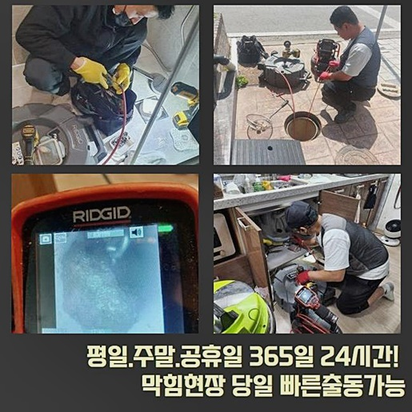
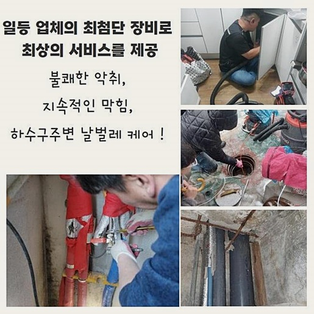
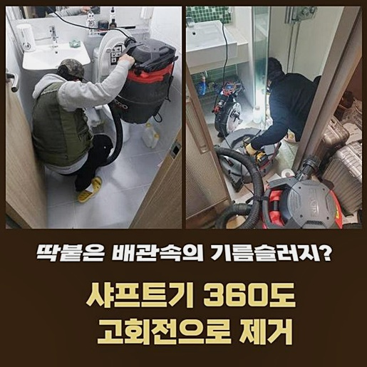
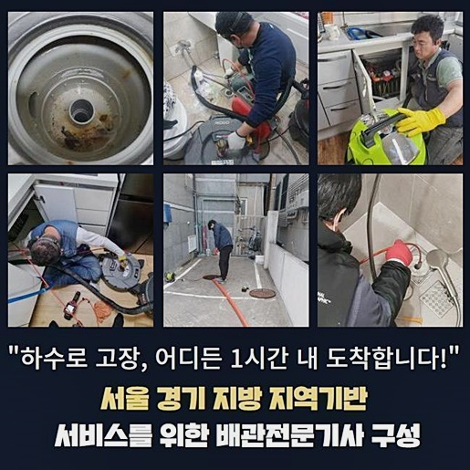
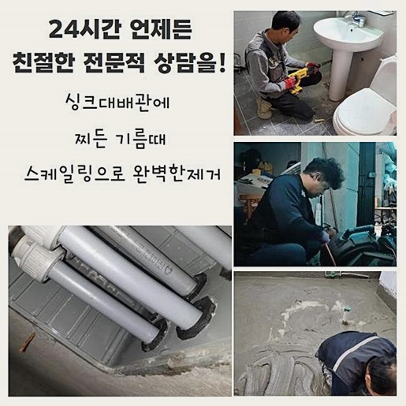
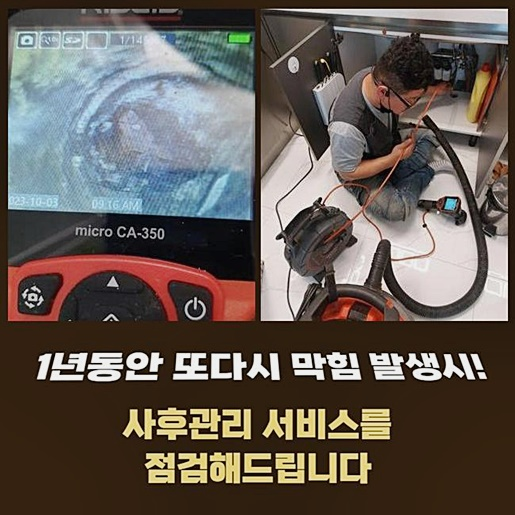

🏠 미추홀구 학익동싱크대배수관역류 주안동 하수구뚫는비용 배관설비공사
용인 싱크대막힘 전문 시공 후기

📋 작업 개요
- 위치: 용인
- 서비스 유형: 싱크대막힘, 하수구막힘, 배관막힘, 누수수리, 역류해결, 뚫는업체, 배관청소, 고압세척, 설비공사
- 작업 일시: 2024. 8. 10. 10:52
- 업체명: 하수구수사대 (010-5615-2118)
🔍 문제 상황
미추홀구 학익동싱크대배수관역류 주안동 하수구뚫는비용 배관설비공사
우리가 활동하는 공간에서도 특히나 물의 이용도가 집중된 화장실이나 개수대는 물의 공급이 중단되는 것도 일상을 마비시키겠지만 오염된 물이 빠져나가는 활동이 지연이 되는 증상도 여러 활동을 하는 데에 커다란 지장을 주는 대상이라고 할 수 있겠죠
이번에 이야기나눌 작업지는 전반적인 하수구가 막혔고 역류되는 증세까지도 건물 내 여러 세대에서 빚어지는 실태라며 저희에게 뚫는 작업이 필요하겠다 의사를 밝히셨어요
여러 세대들이 어려움을 미치고 있으니 제일 빠르게 방문해주실 수 없냐고 간청하셨던 곳이었기에 스케줄을 당겨서 서둘러 내방드린다고 말씀드린 후 진단 도구들을 가지고 말씀해 주신 주소지로 자리를 옮기게 되었습니다
오늘의 건물과 같이 공용시설의 오류가 생겼다면 강력한 고압세척으로 대응해야 하는 케이스도 흔히 찾아볼 수 있으므로 출장에 나서기 전에 고압수를 발포하는 도구도 싣고 길을 떠났습니다
갈피를 못잡을 정도로 수많은 업체 가운데서 지인분이 강력하게 서비스에 대한 만족도를 내비친 저희에게 연락을 주신 것이었죠
여러 정보를 얻어내기 위하여 대화를 몇 마디 나누고 원인을 규명할 수 있도록 검진부터 디테일하게 들어가 주었는데요!
많은 세대원에게 똑같은 증세를 겪으며 작은 파이프가 아니라 중심이 되는 시스템이 마비된 사태일 경우에는 간단한 기술로는 처리가 안됩니다
하수와 찌꺼기를 흡입해 주는 석션 장비나 경화된 석회를 조각내는데 특화된 샤프트같은 장치들로 이러한 현상을 조치하는 건 많이 부족할 수 있어요

🔎 원인 분석
💡 전문가 진단: 정밀 진단 장비를 사용하여 슬러지의 고착 여부를 판명하고 타격/세척 작업을 실시했습니다.
전문적인 세척을 통해서 곤란이 생긴 하수도를 다루는 것이 합리적인 방안이라고 할 수 있어요
우선 벽체 점검구부터 접근하여 중앙 관로를 파악해 보려 시도했습니다
이런 작업은 처음 받아보셔서 여러 차례 시간을 내어야 하며 금전적인 부담이 더해지는 점은 아니었으면 한다며 고객님께서 식은땀을 흘리시면서 속앓이를 하시는 듯 했습니다
현장마다 달라서 상황을 관측한 다음 추산이 되지만 절차에 따라 빠르면서도 용납 가능한 공사비용으로 수습을 해드린다고 먼저 이야기를 전하고 궁금증을 해소하실 수 있게 어떠한 도구들을 통해서 작업을 진척시킬지에 관련한 안내도 조곤조곤 해드렸습니다
하수구는 제아무리 다년간의 경력을 보유하는 실력자라고 할지라도 어두워서 속까지 깊이 보기에는 분명한 한계점이 있기 때문에 좁은 관로에도 쑥 들어가서 화면으로 중계를 도와주는 내부 관찰용 카메라가 내부를 비춰줘야 하는데요
무슨 이유로 막힘이 일어나게 되었고 어떤 구역까지 마수가 뻗어져 있는지 전적으로 파악해야 하니 장치를 준비시켜서 관로를 따라 내려보냈습니다
내밀한 안 쪽까지 내시경 기기를 배정하여 실제 모습을 체크해 보았더니 메인 관로 근처가 끈적하게 슬러지화된 물질 및 기름기가 좔좔 흐르는 때들로 터질 듯 차서 물길을 틀어막고 있는 것이었어요
이처럼 오염도가 심한 상황임을 보여드렸더니 매우 당황하시며 보기만 해도 답답해지는 크기의 대상이 방해하고 있다는 점은 꿈에도 생각치 못하셨다고 하셨네요
사태가 이렇게 심각하니 당연히 정상구동이 안됐겠거니 인정하셨고 중요한 시설인데 관리를 회피했던 게 불찰이라고 전하시기도 했어요

🔧 작업 과정
제대로 청소를 부탁드린다 하시면서 옆에서 보시기로 하셨고 작업 착수 전에 주변부에 비닐을 빈틈 없이 부착하여 보양 업무를 실시했어요
겉을 감싸주지 않는다면 내부에 대한 타격을 가하면서 폭포처럼 오염물질이 쏟아져 내려서 엄청난 냄새를 묻힐 수 있기 때문에 불필요한 데미지를 주지 않도록 이러한 측면들도 완전히 대응책을 세워둬야 합니다
보편적인 배수로들은 길게 늘어진 형상이니 관로의 중앙부 부근까지도 청소를 해줘야 한다는 판단을 내리고 나서 관로 탐지기 센서를 켜서 하수구가 깔린 모양을 분석하는 단계도 선제적으로 진행했습니다
물들이 수렴하는 메인관로는 잔가지 파이프들로 갈라지게 되는데 한 파트만 구멍을 내준다고 해도 다른 세대 내의 하수구에서는 역류가 생기기도 합니다
보완을 들어가야만 하는 구간들을 모두 정리하여 순차적으로 세정을 거쳐주는 방향이 적합합니다
어떤 방향으로 처리할지 계획 설정을 모두 마무리를 해준 다음에 양 끝쪽에서 물대포를 쏴서 씻어내리는 고압 세척기기를 통한 업무를 실시해 보게 됐어요
이름처럼 강력한 물살을 통해서 내부를 통쾌하게 씻어내리는 수단으로 딱 달라붙은 이물질까지도 완전 소강될 때까지 반복해서 청소를 이어가야 하는데요
현장의 규모나 상태에 따라 시간의 변동은 있을 수 있지만 보통은 긴 작업에 속합니다
방향과 파워를 조절하는 것 역시 섬세하게 가해야 하는데 심지어 노화된 설비라면 데미지를 받을 수 있으니 유의해야 합니다
그동안 문제를 묵인해 왔던 탓에 배수로에 대한 정화 작업을 한번이라도 받아봤던 경험이 일천한 상황이었기 때문에 카메라로 살펴본 손길이 닿지 않은 미개척지인 배수관은 엄청난 양의 슬러지가 덕지덕지 붙어있었어요
세척을 하는 도중에도 카메라를 순간적으로만 활용하는 게 아니라 배관이 안전한 상태인지와 제거가 원활히 이뤄지고 있는지를 살펴보며 세기를 조절해가며 작업을 끈기있게 이어가고 있으므로 만에 하나 공사로 인해 배관에 악영향이나 전체 교환 공사를 해야만 하는 일이 발생하면 어떡하나 우려는 넣어두셔도 됩니다
몇 시간의 작업을 실시하여 마침내 깨끗해진 배수관 환경을 정비하게 됐고 기분좋게 마감을 알렸습니다
옆에서 보셨던 의뢰인분도 꼼꼼한 수행 내역을 옆에서 보셨기에 장시간 열심히해주시고 완전히 복구시켜 주셔서 감사하고 죄송스럽다고 표현해 주셨어요
기능을 확인하기 위해서 하수관으로 물이 잘 내려가나 검사해보고 속도감이 시원하게 나오는지 몇 차례 검사를 해보고 다른 시설에는 문제가 없나 체크해 보았더니 건물 이곳저곳에 물기가 유발된 누수에 관련한 의문점들이 속속들이 나왔기 때문에 누수보완이 들어가야한다는 점을 찬찬히 안내를 해드리고 더 눈여겨 봐주었는데요


✅ 작업 완료
누수되는 측면을 발굴해 보니 한 개의 하수관이 바로 드러날 정도로 갈라진 현상이 있는 현황을 알아차리게 됐고 이 부분도 빠른 시일 내에 조치해야하는 상태라고 결론이 났습니다
당일은 메인 배관 자체가 에러가 있었기에 고압 세척을 진득히 수행한 시간이 고객님이 부담스럽다고 하셔서 연이어 시공하기는 어려웠고 배관에 대한 리모델링은 나중에 준비태세를 재차 정비하여 찾아뵙겠다고 말씀을 드리고 철거를 하게 되었습니다
요즘은 단독주택보다는 방식의 건축물이 우세하니 하수관이 불통하는 답답한 일이 불청객처럼 찾아온다면 가까이에 사는 이웃들에게도 안타까운 피해를 줄 수 있는 웃지 못할 해프닝이 생겨납니다
설비의 문제를 겪고 계신다면 늘상 달려나갈 준비가 되어있는 저희 업체에게 전화를 주셔서 답답한 속이 뻥 뚫리도록 처리하시기를 항상 응원드리겠습니다!



⚠️ 베란다 누수 및 방수 관리 방법
- ✅ 비가 많이 올 때 창틀 주변이나 아래층 천장에 얼룩이 생기는지 정기적으로 확인해 보세요.
- ✅ 우수관 주변 실리콘 마감이 들뜨거나 깨진 틈새가 있는지 손상 여부를 수시로 체크하세요.
- ✅ 베란다 바닥 타일의 줄눈(메지)이 소실되면 그 틈으로 물이 침투하여 누수가 유발됩니다.
- ✅ 누수 의심 증상 발견 시 방치하면 아래층 손실이 커지므로 즉시 전문가의 진단을 받으십시오.
💡 핵심 정리
- 확실한 장비 작업(내시경 점검 및 샤프트 스케일링)으로 원인을 뿌리 뽑습니다.
- 작업 후 1년 이내에 동일한 부위 재발 시 100% 무상 A/S 서비스를 보장합니다.
- 서울 · 경기 · 인천 전 지역에 24시간 언제든 긴급 출동할 수 있도록 항시 대기 중입니다.
❓ 자주 묻는 질문 (FAQ)
🚨 용인 싱크대막힘 문제로 고민이신가요?
정확한 원인 진단과 확실한 시공으로 재발 없는 해결을 약속드립니다.
24시간 긴급 출동 | 서울 · 경기 · 인천 전지역 | 1년 내 재발 시 무상 A/S